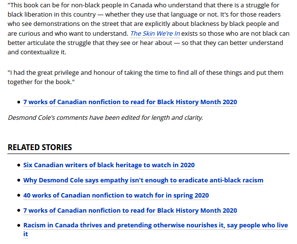

15.3 Recommender Systems
Use text (and other signals) to rank items for a user.
These notes walk through the lecture slides. The original deck is unchanged; use (slides) on the course hub if you want that PDF.
1. Suggestions, not a class label
A recommender ranks items a user has not seen yet. On the web that is a movie, a product, or "related articles." The NLP angle is that many items are text, or have text attached (title, body, reviews).
Two big families:
Collaborative filtering. Recommend what people like you liked. Netflix at scale is this idea: your history plus similar users. You need interactions (watches, clicks, ratings). You do not need to understand the plot.
Content-based. Recommend items whose stuff looks like items you already used. For news, the stuff is the article text. "Related articles" on a newspaper site is the usual example.

A production system often mixes both. This note is about the content side, because that is the topic-model and retrieval machinery from this module.
2. Topic models as a content engine
Take LDA or NMF from Weeks 13–14. Each document gets a topic mix (\theta). Two articles with close (\theta) (cosine, or a small Euclidean distance) are "about the same things."
That is a content recommender:
- represent each document (topics, TF–IDF, or an embedding)
- at read time, score neighbors of the current document
- show the top few that are not the same URL
You can swap the representation. Topics are interpretable ("we showed this because both are elections + courts"). Dense embeddings often rank better and explain worse.
Collaborative filtering fails on a brand-new article with no clicks. Content-based does not. That cold start is why newsrooms keep a text similarity fallback.
3. How you know it worked
Offline accuracy on a toy split is not the product metric.
| Check | What you measure |
|---|---|
| Business counters | Click-through, dwell, purchase if there is one, engagement |
| A/B test | Two rankers, two user groups, same counters |
| User study | People rate "was this related?" on a sample |
| Tiny gold set | For a fixed article, a hand-made list of good neighbors; compare overlap |
| Analytics | Dashboards (Google Analytics or your own) so a drop is visible |
Industry systems combine these. A ranker that wins ROUGE or NPMI but loses clicks loses.
4. Pre-processing is part of the ranker
Tokenization, lowercasing, and what you strip change the neighbors.
Decide the objective first. If relatedness should ignore author bylines, strip them. If "same city" matters, keep place names. If boilerplate ("Subscribe to our newsletter") is in every file, it will glue unrelated articles together. That is a cleanup bug, not a model bug.
The same lesson as KPE and summarization: run the cheap filters before you tune (k).
5. A minimal content stack
For a homework-sized news recommender:
- Clean boilerplate.
- Fit TF–IDF or a 20-topic NMF/LDA on the archive.
- For article (i), take the 5 nearest neighbors by cosine.
- Drop near-duplicates (same title, or cosine (\approx 1)).
- Measure overlap with a 20-article hand list, then (if you can) clicks.
That is enough to feel the difference between "same topic" and "same story reprinted." Collaborative filtering can wait until you have a user–item matrix. Evaluation of the topic piece itself is note 14.3.
6. Practice
-
A brand-new op-ed has zero clicks. Why might collaborative filtering recommend nothing useful, and what do you use instead?
-
Two articles share a high (\theta) on a "subscribe / cookie banner" topic. What do you fix?
-
Name two metrics you would put on an A/B test for "related articles," and one metric you would not treat as a ship decision by itself.
Clicks without dwell can mean bait. Read both numbers before you ship.